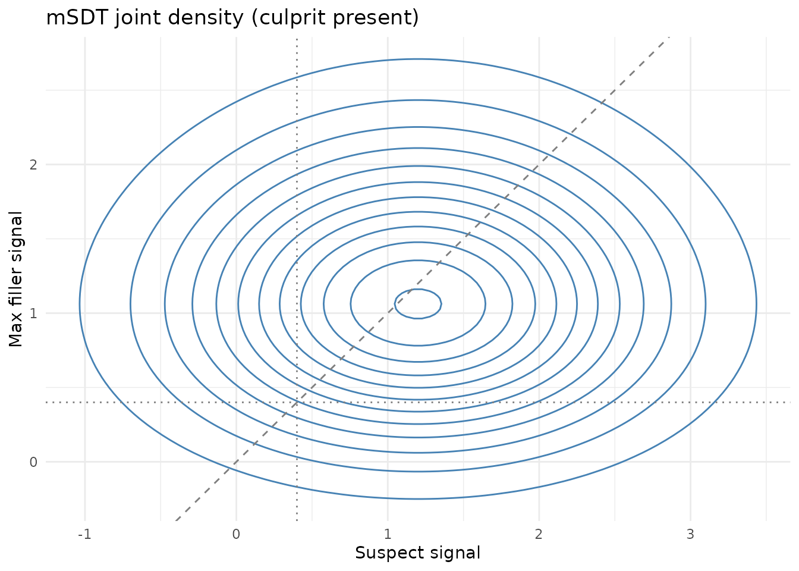
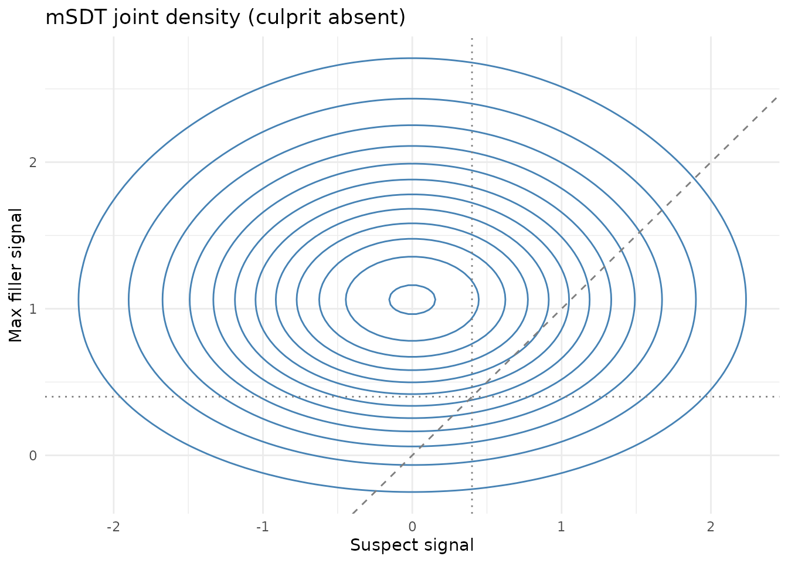

mSDT: Multi-Item Signal Detection Theory
Colin G. Tredoux
Tamsyn M. Naylor
2026-10-31
Source:vignettes/msdt_model.Rmd
msdt_model.RmdAcknowledgement. Large language models supplied by Anthropic and OpenAI were used in preparing this vignette, to assist with checking code, testing the veracity of the approaches described, and on occasion editing the text. Responsibility for the content rests with the authors.
Overview
This vignette introduces core utilities for the multi-item signal detection theory (mSDT) model of Yang, Burke and Healy (2025), covering the components that are mathematically well defined under equal variance and independent filler signals.
What mSDT offers over ordinary SDT
Signal detection theory was built for a binary decision: one item is presented, the observer says “old” or “new”, and sensitivity is the separation between two distributions. It works because there is exactly one signal to evaluate against one criterion.
A lineup is not that. The witness sees m items at once and has three kinds of response available: identify the suspect, identify a filler, or reject the lineup. Classical SDT has no natural place for the filler identification — it is neither a hit nor a correct rejection — and the usual workarounds either discard filler choices or fold them into an error rate, which throws away the most diagnostic information the lineup produces.
mSDT accommodates them by changing what is modelled. Instead of one signal, it models the joint distribution of the suspect’s signal and the strongest filler’s signal. Every response then follows from a single decision rule: if the largest signal in the lineup fails to reach the criterion the witness rejects; otherwise they choose whichever member produced it. Suspect identifications, filler identifications and rejections all fall out of the same model, which is what classical SDT cannot do.
If signal detection theory itself is unfamiliar, the “Signal
Detection Theory, briefly” section of
vignette("simulation_power_analysis") sets out
discriminability and criterion without assuming background, and
vignette("sdt_glm_analysis") shows how the binary case
relates to ordinary regression.
The model is set out in full in Yang, Burke and Healy (2025), which is open access — see the References below.
Key components implemented here:
- The max filler distribution for independent standard normal fillers
- Parameter estimation from rejection rates in culprit-absent and culprit-present lineups (equivalently, target-absent and target-present)
- Joint distribution visualisation (suspect signal against max filler signal)
Joint distributions, and whether fillers are independent
A univariate distribution describes one quantity — how likely the suspect’s signal is to take each value. A joint distribution describes two or more together, including how they move with one another.
The distinction is important here because the witness’s decision is not about the suspect’s signal in isolation. It is about whether the suspect’s signal is the largest and clears the criterion. That is inherently a question about two quantities at once, so a joint distribution is the natural object.
The models implemented here assume the filler signals are independent of one another. That assumption is convenient — it is what makes the max-filler distribution a simple power of the normal CDF — but it is not obviously true. Fillers in a real lineup are chosen to match a description, so they resemble each other. A witness whose memory happens to align with that description may find all of them somewhat familiar, and one whose memory does not may find none of them familiar.
The consequence is not small. Under independence the largest of five standard normal fillers has an expected value of about 1.17. If the fillers are strongly correlated the shared component dominates and the maximum is much less extreme — around 0.37 at a correlation of 0.9, roughly a third of the independent value. Treating correlated fillers as independent therefore overstates how often a filler out-competes the suspect, and so understates the suspect’s exposure.
Max filler distribution
Because the witness responds to whichever member feels strongest, the quantity that decides the outcome is not any particular filler’s signal but the largest of them. So the distribution needed is that of the maximum of filler signals.
Under independence it has a simple closed form. The maximum is below exactly when every filler is below , so
and the density follows by differentiating. This is the whole reason the independence assumption is attractive.
dmax_filler(0, lineup_size = 6) # density at 0
#> [1] 0.1246695
pmax_filler(0, lineup_size = 6) # P(max filler < 0) = 0.5^5
#> [1] 0.03125
qmax_filler(0.5, lineup_size = 6) # median of the max filler signal
#> [1] 1.128998Note that pmax_filler(0, lineup_size = 6) is 0.03125,
which is
:
with five fillers, all five must fall below zero.
The practical point is that the max filler distribution is shifted well to the right of the distribution of any single filler. Each filler is centred at 0, but the largest of five is centred near 1.17. A culprit with is therefore competing against a typical best-filler signal higher than its own mean — which is why lineup identification is hard, and why lineup size is so important.
Moments
A moment is a summary number describing the shape of a distribution. The three used here are the familiar ones under formal names: the first moment is the mean, which says where the distribution sits; the second central moment is the variance, which says how spread out it is; and the third standardised moment is the skewness, which says how asymmetric it is — zero for a symmetric distribution, positive when the right tail is longer.
They are important here because the max filler distribution is not normal, even though every filler individually is. Taking a maximum shifts the distribution right, compresses its spread, and makes it asymmetric. The moments quantify exactly that, and they are computed numerically because no simple closed form exists.
moments <- max_filler_moments(6)
knitr::kable(
data.frame(
Moment = c("Mean", "Variance", "Skewness"),
Value = round(c(moments$mean, moments$var, moments$skewness), 4),
Reading = c("Centre: well above the 0 of any single filler",
"Spread: narrower than a single filler's variance of 1",
"Asymmetry: positive, so a longer right tail")
),
row.names = FALSE,
caption = "Moments of the maximum of five independent standard normal filler signals (lineup size 6). Analytic quantities, not computed from data."
)| Moment | Value | Reading |
|---|---|---|
| Mean | 1.1630 | Centre: well above the 0 of any single filler |
| Variance | 0.4475 | Spread: narrower than a single filler’s variance of 1 |
| Skewness | 0.3026 | Asymmetry: positive, so a longer right tail |
Estimating mSDT parameters from rejection rates
Let
- be the rejection rate in culprit-absent lineups
- be the rejection rate in culprit-present lineups
Then (Yang et al., 2025):
Why rejection rates in particular
Because they are the one outcome with a clean algebraic form, and between them they identify both parameters.
A rejection occurs only when every signal in the lineup falls below the criterion. In a culprit-absent lineup all members are fillers, so the rejection rate is — and note what is absent from that expression: . The culprit-absent rejection rate depends on the criterion alone, so it pins down by itself.
In a culprit-present lineup the culprit must fall below the criterion and so must the fillers, giving . With already known from the first equation, the gap between the two rejection rates fixes .
Two equations, two unknowns, solved in closed form — no optimiser, no starting values, no convergence to check. That is the appeal.
What the helper does
estimate_msdt_params() is a convenience function that
performs that algebra for you: it inverts the first equation for
,
substitutes into the second, and inverts for
.
The two steps are also available separately as
msdt_gamma_from_rej() and
msdt_dprime_from_rej().
params <- estimate_msdt_params(pr_rej_I = 0.25, pr_rej_G = 0.15,
lineup_size = 6)
params
#> $gamma
#> [1] 0.8193286
#>
#> $dprime
#> [1] 0.8789708
# The estimate reproduces the input rejection rate exactly, as it must
pnorm(params$gamma)^6
#> [1] 0.25What this estimator gives up
The closed form comes at a price.
estimate_msdt_params() uses only the two
rejection rates. It never looks at whether the witnesses who
did choose picked the suspect or a filler. Since a suspect
identification and a filler identification carry very different
evidential weight, that is a great deal of information to leave on the
table — arguably the most informative part of the data.
The estimator is also exactly identified: two
numbers in, two parameters out, with nothing left over. There is no
residual, so there is no goodness-of-fit test, and for feasible rates
the model reproduces the two rates it was given. Not every pair of rates
is feasible, however. With
members, a target-absent rejection rate
fixes
,
and the target-present rejection rate can then be at most
,
the limit as
.
Rates outside that bound, for example
estimate_msdt_params(0.1, 0.9, 6), are rejected with an
error, and rates at the edges of the scale are clipped, so the
reproduction is exact only in the interior.
Use it when the rejection rates are all you have, or as a quick starting point. Where the full response breakdown exists, prefer:
| Function | Uses | Gives you |
|---|---|---|
estimate_msdt_params() |
Two rejection rates | and , closed form, no fit statistic |
fit_max_sdt() |
All suspect/filler/reject counts | and criterion, plus a chi-square goodness-of-fit and bootstrap intervals |
fit_winter_2ht() |
All suspect/filler/reject counts | A different process account, separating detection from guessing and bias |
fit_max_sdt() fits the same MAX decision rule as here,
on the compound decision structure described by Duncan (2006), by
minimising Pearson chi-square rather than maximising a likelihood. See
vignette("model_comparison") for the 2-HT alternative.
Joint distribution plots
These show the decision space directly: the suspect’s signal on one axis, the strongest filler’s signal on the other. The MAX rule carves that plane into three regions — reject, identify the suspect, identify a filler — and the contours show where the probability mass falls in each.
plot_msdt_joint(dprime = 1.2, gamma = 0.4, lineup_size = 6,
lineup_type = "culprit_present")
plot_msdt_joint(dprime = 1.2, gamma = 0.4, lineup_size = 6,
lineup_type = "culprit_absent")
These plots use no dataset. They are analytic densities drawn from the parameters supplied in the call — here , and a six-person lineup — not summaries of observed data. Comparing the two makes the model’s logic visible. In the culprit-absent plot the suspect is one innocent member, Normal(0, 1), but the other axis is the strongest of the five fillers, whose density is with mean about 1.16. The joint density is therefore not symmetric about the diagonal: the mass sits above it, towards the filler axis (at the density is about eight times that at ). That asymmetry is why an innocent suspect is chosen less often than the fillers combined. In the culprit-present plot the suspect’s signal is shifted by , moving the mass towards the suspect axis.
Technical Details
What is computed
| Function | Quantity | Form |
|---|---|---|
dmax_filler() |
Density of the max of fillers | |
pmax_filler() |
CDF | |
qmax_filler() |
Quantile | |
max_filler_moments() |
Mean, variance, skewness | Numerical integration |
estimate_msdt_params() |
, | Closed form from the two rejection rates |
Assumptions
- Filler signals are independent and identically distributed .
- The culprit signal is — equal variance.
- A single criterion is applied to the largest signal, with no confidence criteria.
- Lineups are simultaneous and fair, so
lineup_sizecounts functioning alternatives. A lineup with null foils has a smaller effective size than its nominal size, and since enters the equations directly, both and will be biased. Checklineup_table()first. -
estimate_msdt_params()is exactly identified and therefore untestable — no residual, no goodness-of-fit.
References
Duncan, M. (2006). A signal detection model of compound decision tasks (Technical Note DRDC TR 2006-256). Defence R&D Canada, Toronto.
Wixted, J. T., Vul, E., Mickes, L., & Wilson, B. M. (2018). Models of lineup memory. Cognitive Psychology, 105, 81-114.
Yang, Y., Burke, J. L., & Healy, J. (2025). A multi-item signal detection theory model for eyewitness identification. Cognitive Research: Principles and Implications, 10, 54. https://doi.org/10.1186/s41235-025-00652-3
Further Reading
-
?dmax_filler,?estimate_msdt_params,?plot_msdt_joint,?fit_max_sdt -
vignette("simulation_power_analysis")for signal detection theory from the beginning -
vignette("model_comparison")andvignette("lineup_memory_models")for the models that use the full response breakdown